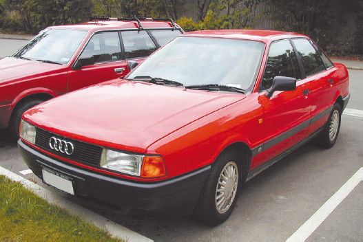
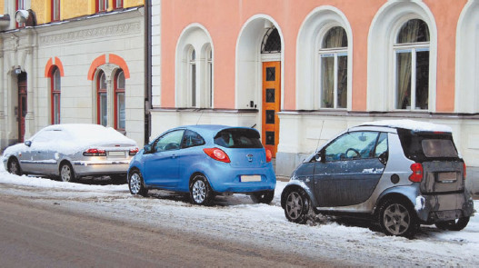
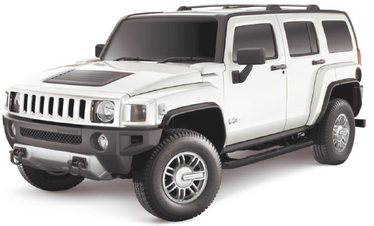

«Хочу красный автомобиль!»
Как-то одна девушка, обучающаяся на курсах вождения, рассказывала, какой именно автомобиль она приобретет, как только получит права. По ее словам, машина будет обязательно красной («Хочу поярче, никаких унылых расцветок!»), с велюровым салоном, непременно с литыми дисками, кондиционером и CD-проигрывателем.
Вы уже поняли, в чем была ее ошибка?
Ни одного существенного критерия, по которому должен осуществляться выбор автомобиля, названо не было. Если бы девушка, например, сказала, что всю жизнь мечтала о красной Audi 80 с двухлитровым двигателем, чтобы ездить на ней на работу и по магазинам (рис. 1.2), вопросы вряд ли бы возникли и об ошибке речи бы не было. Но просто «красная машина» – это от пожарной и до неизвестности. А в результате можно оказаться отнюдь не с тем автомобилем на руках, который действительно подходит.

Рис. 1.2. Audi 80 – чем не мечта!
Особенно часто молодые водители приобретают автомобиль «как у приятеля» или «как в кино», совершенно не задумываясь, что приятель, к примеру, не сам оплачивает обслуживание автомобиля, да и машина-то не его собственная, а родителей, которые за все и платят. Как следствие – молодой человек старательно копит деньги, приобретает вожделенную марку (конечно, б/у и чаще всего весьма солидно), а затем оказывается, что на обслуживание денег не хватает, оплачивать эксплуатационные расходы просто нечем. Те же машины, которые так лихо рассекают необозримые пространства на экранах, в реальной жизни оказываются куда как скромнее (речь, разумеется, не идет об известных элитных марках и моделях).
Но не следует считать, что подобный выбор – удел лишь молодых. Вполне солидный человек при выборе автомобиля может руководствоваться весьма странным критерием: в точности такую машину водит его начальник, сосед по даче, сослуживец или друг семьи. И на вид автомобиль весьма привлекателен, так почему бы и не купить? Только после покупки выясняется, что друг семьи – одинокий человек и ему вполне достаточно микролитражки Ford Ка или Smart, которая замечательно прошмыгивает в пробках мегаполиса (рис. 1.3). А наш герой обременен многочисленным семейством, которое в пресловутую микролитражку приходится утрамбовывать при каждой поездке. К тому же оказывается, что друг семьи никогда не ездил на своей машине по проселочным дорогам, а ведь нужно и на дачу поехать, и оттуда что-то привезти…

Рис. 1.3. В большом городе маленький Ford Ка (в центре) или Smart (справа) как нельзя кстати
Противоположный вариант – приобретение не слишком маленького, а слишком большого автомобиля, который понравился своим солидным видом и вместительностью (рис. 1.4). Вот только оказывается, что одинокому человеку особенно нечего возить в просторном багажнике и салоне, а топлива такой автомобиль употребляет отнюдь не мало. К тому же для него еще нужно найти место на парковке – габаритный автомобиль не так и просто припарковать в современных городских условиях.

Рис. 1.4. Hummer – не лучший выбор для начинающего водителя
А ведь существует еще проблема новых и подержанных автомобилей, когда человек, доходов которого явно недостаточно для покупки новой машины, все же приобретает таковую в кредит, одолжив деньги на первоначальный взнос у всех друзей и знакомых.
Для многих подобные автокредиты стали настоящей ловушкой. Конечно, новый автомобиль предпочтительнее с многих точек зрения. Но проценты по кредиту? Предпочтительнее ли они приобретения симпатичной и не особенно сильно «поношенной» машины? А ведь сколько раз уже бывало, что человек, не рассчитавший своих возможностей при получении автокредита, оставался в результате и без своих денег, уже вложенных в автомобиль, и без самого четырехколесного друга, который изымался банком (причем, поверьте, весьма неохотно, ведь подержанный автомобиль является практически неликвидным активом). В то же время более скромный б/у автомобиль, приобретенный без помощи автокредита, по сей день преданно возил бы своего хозяина.